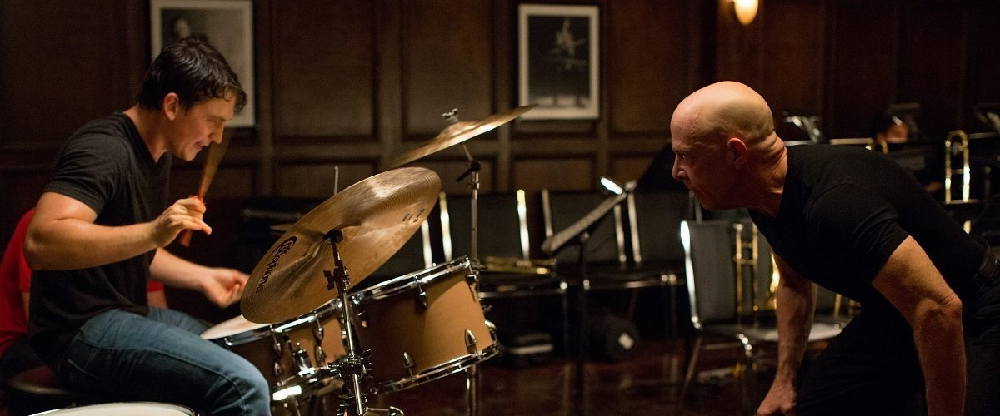

Andrew Neiman (Miles Teller) es un joven y prometedor baterista de jazz que se matricula en el conservatorio de música Shaffer, en la ciudad de Nueva York, considerado el mejor del país. Allí, Andrew se encuentra con una competencia feroz donde sus sueños de grandeza son asesorados por Terence Fletcher (J. K. Simmons), un perfeccionista y abusivo director de orquesta que no se detendrá ante nada para obtener el máximo potencial de un joven estudiante.
Whiplash es una película dramática estadounidense de 2014, escrita y dirigida por Damien Chazelle. La película está protagonizada por Miles Teller como el joven baterista de jazz Andrew Neiman que asiste a una de las mejores escuelas de música del país en Nueva York, bajo la tutela del temible jazzista y maestro Terence Fletcher (J.K. Simmons). Completan el reparto Melissa Benoist, Austin Stowell, Jayson Blair, y Kavita Patil. La película se estrenó en competición en los EE.UU. en la Categoría Drama en 2014 en el Festival de Cine de Sundance el 16 de enero de 2014, como la película de apertura del festival.4?5?6?Poco después del estreno de la película, Sony Pictures Worldwide adquirió los derechos de distribución internacional.7
Will se enfrenta a un encarcelamiento después de agredir a un hombre que lo había intimidado cuando era niño. Lambeau insta y ayuda a Will para no ir a la cárcel, si él está de acuerdo en estudiar matemáticas bajo su supervisión y ver a un terapeuta. Will está de acuerdo, pero trata a sus terapeutas con desprecio y se niega a trabajar con ellos. En su desesperación, Lambeau le pide ayuda a Sean Maguire (Robin Williams). Él fue compañero de habitación de Lambeau en la universidad, también se crio en el sur de Boston, y ahora enseña psicología en Bunker Hill Community College. A diferencia de los otros terapeutas, Sean logra comunicarse más con Will superando sus mecanismos de defensa, y después de unas cuantas sesiones improductivas Will comienza a abrirse.